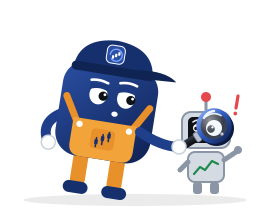

Lợi thế của bot bạn có thật không?
Backtest độc lập và kiểm chứng lịch sử giao dịch cho bot giao dịch crypto. Chúng tôi chạy chiến lược của bạn trên dữ liệu lịch sử thật của Binance, với phí thật, và nói thẳng liệu lợi nhuận có trụ vững hay không. Kiểm chứng cả lịch sử giao dịch Forex, vàng và dầu.
- Bất kỳ coin nào bạn chọn
- Chi tiết đến nến 1 giây (3 tháng gần nhất)
- Forex, vàng & dầu
- Kịch bản tốt nhất, bình thường và xấu nhất
- PASS · CAUTION · FAIL
- Xác minh bằng mã QR

Chúng tôi kiểm tra gì
Backtest chiến lược
Gửi chiến lược Freqtrade hoặc TradingView Pine Script của bạn. Chiến lược tự động chạy trên nhiều năm dữ liệu với hơn 20 đồng coin hoặc Forex, có phí thực tế và bài kiểm tra chịu tải phí.
Kiểm tra lịch sử giao dịch
Có người đưa bạn danh sách lệnh mà họ tự nhận đã vào? Chúng tôi đối chiếu từng điểm vào và thoát lệnh với giá thật, chính xác đến từng giây, và đánh dấu những mức giá chưa từng xuất hiện.
Kiểm tra dữ liệu tương lai
Nhiều chiến lược trông rất đẹp chỉ vì chúng nhìn trộm những cây nến mà khi chạy thật không thể thấy được. Chúng tôi chạy lookahead test và nói rõ nếu phát hiện.
Coin của bạn, chính xác đến từng giây
Test trên 20 coin chính của chúng tôi, hoặc chọn các coin bạn giao dịch. Muốn chi tiết hơn? Chúng tôi có thể chạy lại chiến lược trên nến 1 giây. Coin tùy chọn và chạy nến 1 giây sẽ mất nhiều thời gian hơn.
Ba kết quả, không phải một
Giao dịch thật không bao giờ suôn sẻ như backtest. Mỗi báo cáo đưa ra kết quả lạc quan, bình thường và bi quan, kèm các yếu tố tác động: khớp lệnh, trượt giá, phí và thị trường.
Cả Forex, vàng và dầu
Bạn đang bán hoặc mua một EA MetaTrader hay tín hiệu Forex? Hãy gửi lịch sử giao dịch của nó (file xuất từ MetaTrader 5 dùng được ngay) và chúng tôi đối chiếu từng lệnh vào và ra với giá bid và ask thật của đúng phút đó, cho các cặp Forex, vàng, bạc, dầu và các chỉ số chính.
Báo cáo không ai làm giả được
Mỗi báo cáo đều có mã QR và link kiểm tra. Bất kỳ ai bạn đưa xem đều có thể xác nhận trên website của chúng tôi rằng kết luận và các con số đúng là do chúng tôi cấp.
Cách hoạt động
Gửi file
Chọn loại test và khoảng thời gian, rồi gửi chiến lược hoặc lịch sử giao dịch. Chọn để kết quả công khai, ẩn danh hay riêng tư.
Nhận báo cáo
File PDF gồm Edge Score, biểu đồ, kết quả theo năm và theo điều kiện thị trường, cùng mọi dấu hiệu cảnh báo (red flag) chúng tôi phát hiện.
Từ showcase
Các chiến lược miễn phí phổ biến, được test nguyên trạng với cài đặt mặc định. Xem tất cả kết quả và cách đọc →
Bot của riêng bạn lại là chuyện khác. Chiến lược trả phí, riêng tư hoặc được tinh chỉnh kỹ chính là thứ chúng tôi kiểm tra. Hãy biết bot của bạn thực sự ở mức nào trước khi giao tiền thật cho nó: test miễn phí trên Telegram.